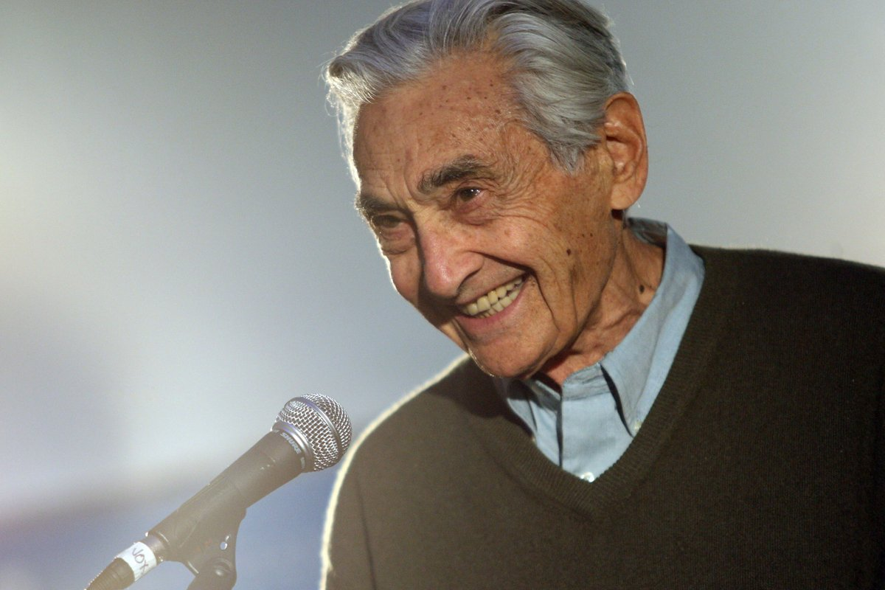

Howard Zinn was an American historian, playwright, and activist.
- He was born August 24, 1922 to a Jewish immigrant family in Brooklyn.
- As a young man he attended a peaceful political rally where he was struck by police and knocked unconscious, an event that would shape his political views.
-
In 1940 he began an apprenticeship as a shipfitter. Apprentices were excluded from trade unions at the time, but Zinn and his peers formed the Apprentice Association to gain bargaining power.
-
During World War II Zinn joined the Air Force as a bombardier. His later anti-war views were particularly informed by his participation in the fire bombing of the French town of Royan and the inaccurate official Air Force history.
-
In 1958 he earned a Ph.D. in history with a minor in political science from Columbia University.
-
He was a professor of history at Spelman College in Atlanta where he became a supporter of his student's participation in the Civil Rights Movement. He served as advisor to the Student Nonviolent Coordinating Committee and accompanied students to sit-ins. Despite being tenured he was dismissed for marching with his students.
-
In 1964 he accepted a position at Boston University, where he stayed until retiring in 1988.
-
In 1966 he traveled to Japan to give a lecture tour about the ongoing Vietnam War. Upon returning home he continued to travel the United States speaking out against the war.
-
In 1967 he published a book calling for the US's withdrawal from the war titled Vietnam: The Logic of Withdrawal.
-
In 1968 he took part in a diplomatic mission to Vietnam that led to the first return of American POWs since the bombing of North Vietnam began.
-
Along with Noam Chomsky, Zinn edited The Pentagon Papers, the secret Department of Defense report that revealed lies told by the US administration to the public and to Congress about the ongoing war. He testified in defense of the consultant who leaked the report.
-
In 1980 he published his own textbook A People's History of the United States, which became his most widely known work.
-
Zinn was a critic of the 2003 invasion of Iraq, publishing several books about it.
-
On January 27, 2010 Zinn died of a heart attack.
We don’t have to wait for some grand utopian future. The future is an endless succession of presents, and to live now as we think humans should live, in defiance of all that is bad around us, is itself a marvelous victory.
Howard Zinn, from his autobiography You Can't Be Neutral on a Moving Train
Read his articles and interviews at HowardZinn.org